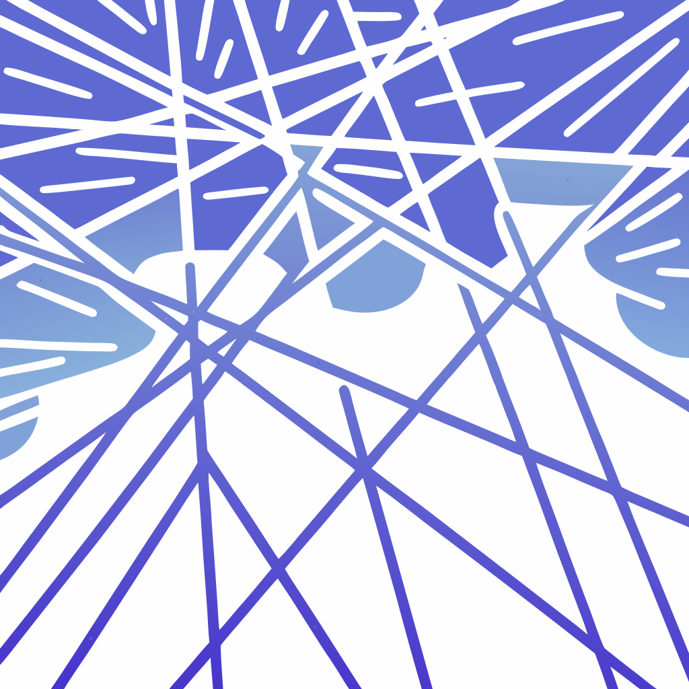
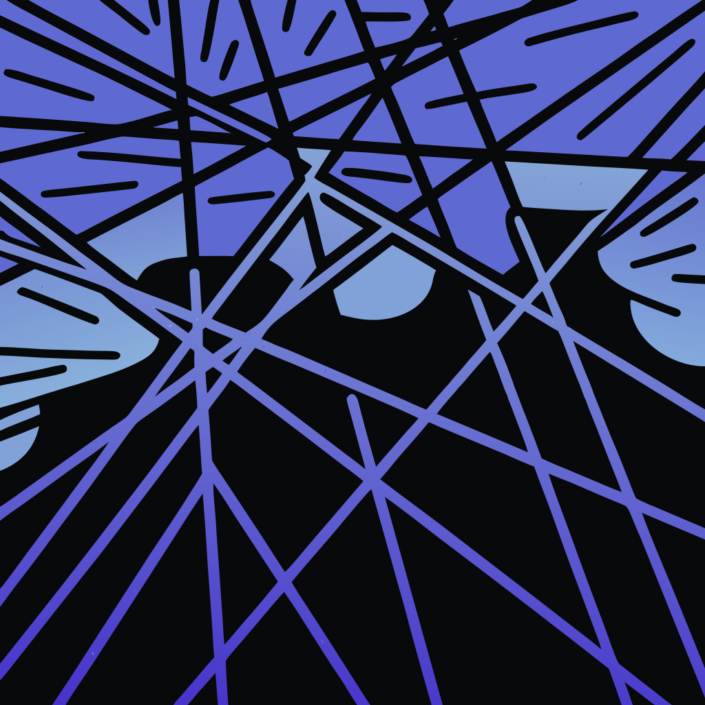
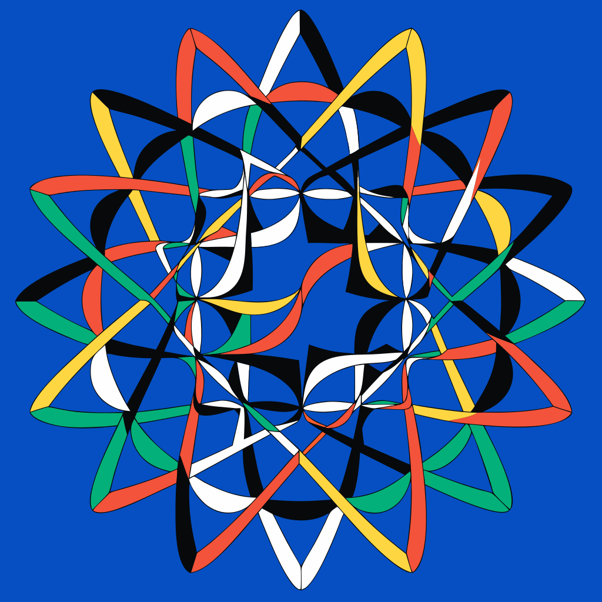
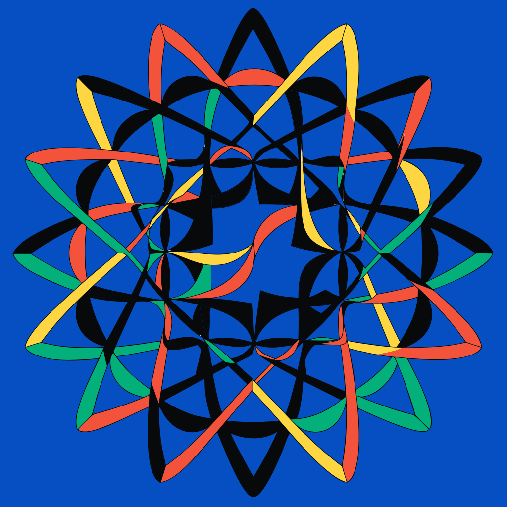

Слева — что вернул Recraft API. Справа — после прогонки через recolor.sh (sed-замена по карте RGB → v4-токены). Без новых генераций. Это и есть workflow «генерируем форму, сами красим».




Вывод: Recolor отлично работает на SVG с 2–4 цветами (как probe-negprompt).
Многоцветные результаты (как probe-v4) бесполезны.
→ Стратегия: генерим с substyle:"line_art" + negative_prompt (чистый линеарт),
потом sed-карта переводит в палитру v4.
Бюджет на одну итерацию = только стоимость генерации, recolor бесплатно.